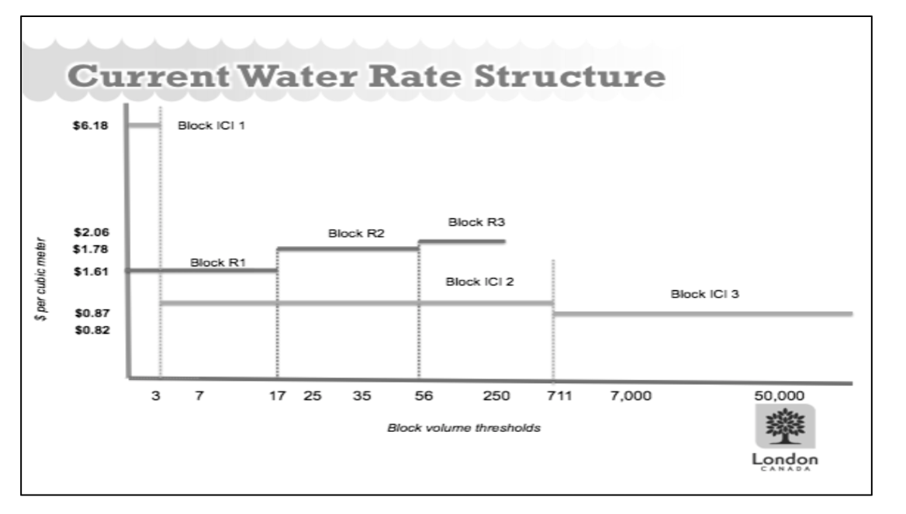
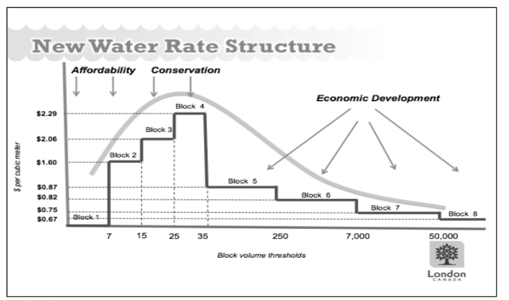
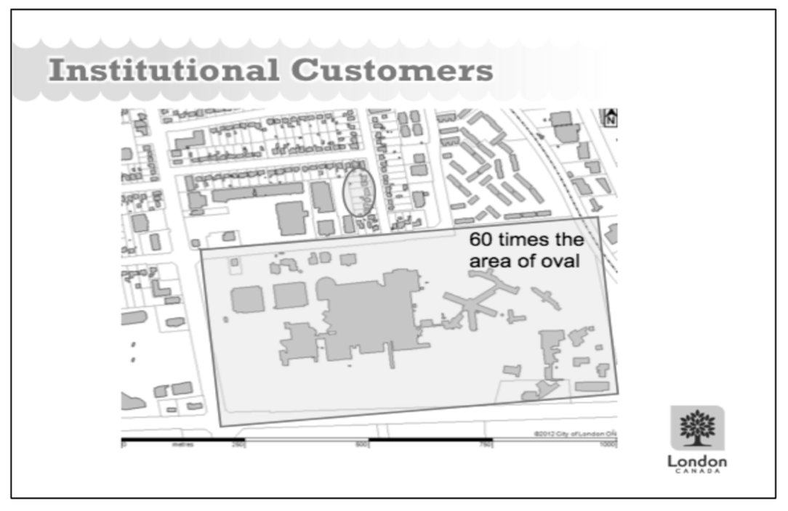

Problem at Hand
The water management system for London, Ontario has gone through multiple administrative and regulatory changes over the last few decades, causing increases in expenses for purely bureaucratic purposes -- though in the case of the regulatory changes these expenses are welcomed for public safety. These changes, though, are in addition to the natural expenses that arise with a city that has seen a drastic increase in growth over the years and has aging pipelines that need to be planned for replacement in the coming decades. Add that to a pricing structure that hasn't been reviewed in some time and London Water's billing method is due for some adjustments. The business is not sustainable as is; the pricing structure needs to be adjusted to ensure future financial stability that accounts for needed upgrades and expansions on the water system, while also encouraging reduced water usage both for environmental reasons and to help reduce the strain on the water system.
However, it is not as easy as simply increasing rates across the board. There are three main categories of water use: water intake, wastewater processing, and stormwater management. The first, and least expensive to manage, is easy to account for using water meters. However, there is nuance to the last two -- which also happen to be the most expensive to manage. Wastewater processing is not as easy as "water in equals water out". Rather, there are multiple businesses, providing economic value to the city, that use water in their product. These include companies like breweries, so water intake is vastly higher than their wastewater production. Additionally, there are concerns around the equitability of the stormwater billing structure due to the limitations of the current system.
Analysis Summary
The existing water rate structure, shown in Exhibit 1, differentiates rates between residential customers (R1-R3) and business customers (industrial, commercial, and institutional -- ICI1-ICI3). Using this payment structure, with the exception of ICI1 which is an extreme outlier, businesses that are using the same amount of water as residential customers are paying less per cubic meter of water non-business customers. While the likely intent of reduced rates for businesses is to support industries that rely on water for their final product, such as breweries, a business using the same amount of water as a residential customer is most likely not using water in their final product. As such, residential customers are directly subsidizing the water expenses for businesses in the area.
Exhibit 2, though, shows the proposed new water rate which does not differentiate between business and residential customers. Rather, the new rate breaks metered water usage into eight groups with unique rates intended to meet particular goals based on the amount of water being used. The first two groups, Block 1 and 2, are for customers using the least amount of water and are intended to provide consumers with a built-in discount for reducing their water consumption. From there, Block 3 and 4 increase rates to account for the added strain on the water system by residential and business customers for whom water intake is assumed to be similar to wastewater output. Starting with group 5 and beyond, the cubic meter rate reduces and continues to reduce to both account for and encourage the development of businesses that use water for their sales product.
For the residential side, customers who are on the higher end of water usage will see an increase in their water expenses. However, that is intentional and meant to encourage a reduction in water use over time. As seen in Exhibit 3, the prospective of metered residential water usage rates, under the new billing system the average residential customer would be included in Block 3 for 2011-2013, while the former system had the average customer in RS1 for 2011 and 2012, then RS2 for 2013. With the new billing system in place, the total metered fees for residential customers would increase, bringing in an additional 6-8 million in revenue provided water usage doesn't change.
Recommended Next Steps
By adjusting the metered water rates to no longer differentiate between residential and business customers, London Water will be able to both bring in additional revenue and provide a more equitable experience to its customer base while still adjusting for business enterprises that use water as part of their final product. However, while a new customer billing layout is being introduced alongside the new metered fee system, the flat rate fees are as yet unchanged. The new billing system for metered charges directly addresses water intake and wastewater processing, however the inequity in expenses related to stormwater processing still needs to be addressed. This is the next step that must be taken in the review of London Water's billing system.
Under the current system, as seen in exhibit 4, the smallest cutoff for stormwater charges is 0.4 hectares, or 1 acre. As London, Ontario is a fairly dense urban area, the average residential lot is well below that cutoff. For example, exhibit 5 demonstrates how a single institutional business customer uses over 60 times the land mass of 8 residential customers (shown in the circled oval), yet the group of residential customers pay more the same amount for stormwater runoff than the institutional customer. In full transparency, the business customers are underpaying for their stormwater fees. By adding nuance to the billing structure to account for variable lot sizes, London Water will be able to build more equity into their billing structure while also recouping lost expenses for processing stormwater runoff for businesses that use larger areas of land. This is the next London Water needs to take in building a sustainable billing system.
Exhibit 1 -- London Water's Current Water Rate Structure
{width="6.5in" height="3.6951388888888888in"}
Exhibit 2 -- London Water's New Water Rate Structure
{width="6.5in" height="3.839583333333333in"}
Exhibit 3 -- Prospective of Metered Residential Water Usage Rates
2011 2012 2013
Total Residential 18,527,265 18,488,769 23,584,012
Water Usage for the m^3^ m^3^ m^3^
Year
Total Number of 99,641 100,801 102,421
Residential
Customers
Average Monthly 15.50 m^3^ 15.28 m^3^ 19.19 m^3^
Usage per
Residential
Customer
Average Water Rate: \$ 2.06 \$ 38,166,166 \$ 2.06 \$ \$ 2.06 \$ New 38,086,864 48,583,065
Average Water Rate: \$ 1.61 \$ 29,828,897 \$ 1.61 \$ \$ 1.78 \$ Old 29,766,918 41,979,541
Revenue \$ \$ \$
Increase 8,337,269 8,319,946 6,603,523
Exhibit 4 -- Stormwater Processing Fees
Customer Type Rate Unit
Residential \< 0.4 hectares \$ 13.78 monthly
Institutional \< 0.4 hectares \$ 13.66 monthly
Commercial/Industrial \< 0.4 hectares \$ 14.78 monthly
Commercial/Institutional/Residential > 0.4 \$ 75.12 per hectare hectares
Industrial > 0.4 hectares \$ 112.68 per hectare
* 0.4 hectares \~ 1 acre
Exhibit 5 -- Institutional vs Residential Land Area Use
{width="4.916083770778653in" height="3.1923031496062992in"}